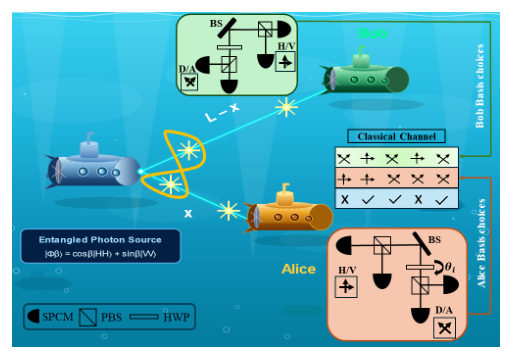

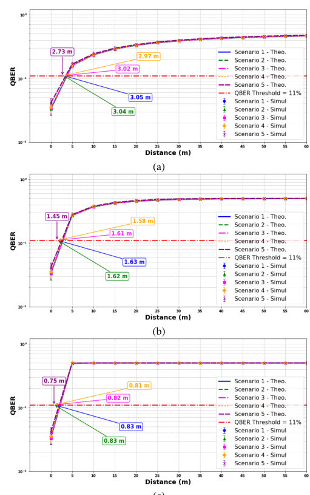
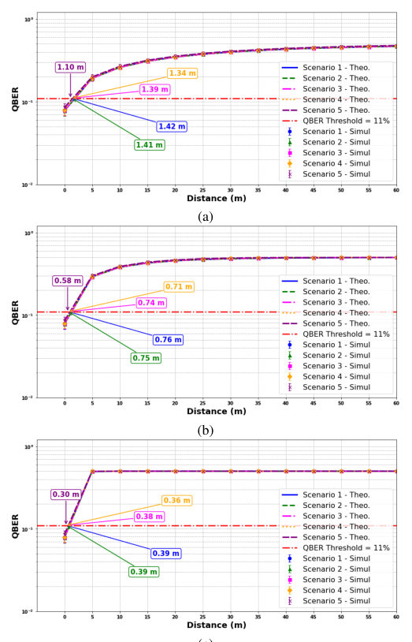

← Index · ← Previous · Next →
Authors: Liubov Gosteva, Dipankar Roy, Nicolás Wschebor, Léonie Canet
Type: theory · Category: statistical mechanics · PDF: https://arxiv.org/pdf/2605.23364v1
Analysis basis: full PDF text, analyzed in chunks
Topic relevance: non-equilibrium universality 3/5 · non-equilibrium dynamics 2/5
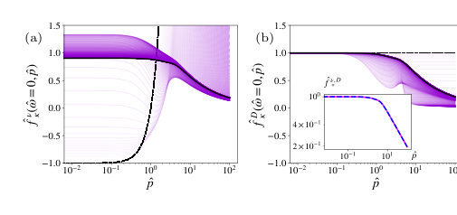
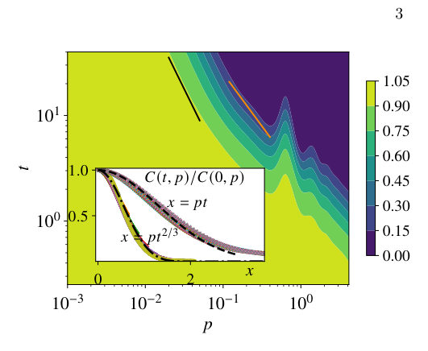
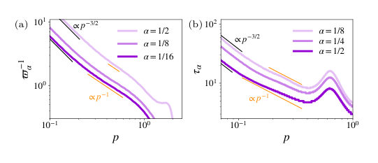
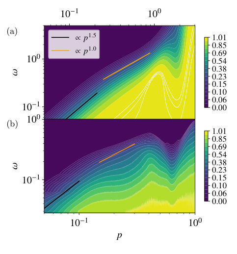
Summary. This paper identifies a new intermediate scaling regime in the Kuramoto-Sivashinsky equation characterized by an inviscid Burgers exponent of z=1. This regime emerges because the effective viscosity vanishes as the system flows from its microscopic unstable state to its macroscopic KPZ state. The findings are robustly supported by both functional renormalization group theory and large-scale numerical simulations.
Why it may be interesting. not directly relevant
Main problem. The identification and characterization of a previously overlooked intermediate scaling regime in the one-dimensional Kuramoto-Sivashinsky (KS) equation.
Main result. The discovery of an 'Inviscid Burgers' scaling regime with a dynamical exponent z=1, which exists at intermediate scales between small-scale non-universal behavior and large-scale KPZ scaling (z=3/2).
Method. The study employs Functional Renormalization Group (FRG) using the Wetterich equation and Next-to-Leading-Order approximation, complemented by Direct Numerical Simulations (DNS) using a pseudo-spectral method.
Model / system. The one-dimensional Kuramoto-Sivashinsky (KS) equation, which describes systems with negative viscosity and positive fourth-order dissipation, relevant to chemical turbulence, flame fronts, and surface roughening.
Key observables. Dynamical exponent (z), effective viscosity (nu_kappa), two-point correlation function C(t, p), and time-reversal symmetry emergence.
Important parameters / regimes. Negative microscopic viscosity (nu < 0), positive fourth-order term (tau > 0), and the transition from the IB regime (z=1) to the KPZ regime (z=3/2).
Assumptions / limitations. The use of a Next-to-Leading-Order (NLO) approximation within the FRG framework and the introduction of a noise term to facilitate the study of scaling regimes.
Figures summary. Figure 1 shows the evolution of FRG functions and the convergence to a fixed point; Figure 2 shows DNS correlation function data collapse; Figure 3 compares the Fourier transform of the correlation function between FRG and DNS.
Paper structure. The paper introduces the KS equation and the problem of intermediate scaling, presents the FRG framework and results showing the vanishing effective viscosity, validates these findings with DNS, and concludes with the implications for universality classes.
We show that the one-dimensional Kuramoto-Sivashinsky (KS) equation features a scaling regime characterized by the dynamical exponent $z=1$ at intermediate scales between the large-scale Kardar-Parisi-Zhang (KPZ) scaling with $z=3/2$ and the small-scale non-universal behavior. This scaling regime is intrinsic to the KS dynamics since it arises from the vanishing of the effective viscosity when evolving from its microscopic negative KS value, to its macroscopic effective positive KPZ value. This vanishing of the viscosity deeply imprints the behavior of correlations at intermediate scales, which exhibit a universal $z=1$ scaling. This behavior pertains to the inviscid-Burgers universality class, which corresponds to the zero-viscosity fixed point of the KPZ equation. We evidence and characterize this so-far-overlooked scaling regime using both functional renormalization group and direct numerical simulations.
Authors: Wei Wang, Yupeng Wang, Xiaoling Cui
Type: theory · Category: quantum gases · PDF: https://arxiv.org/pdf/2605.23267v1
Analysis basis: full PDF text, analyzed in chunks
Topic relevance: Keldysh / 2PI / non-Gaussian methods 3/5 · analog quantum simulation 2/5
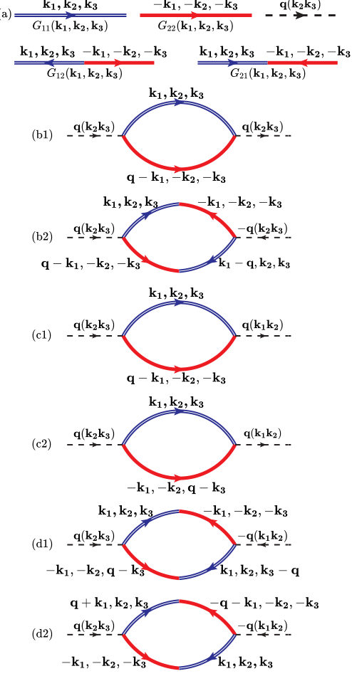
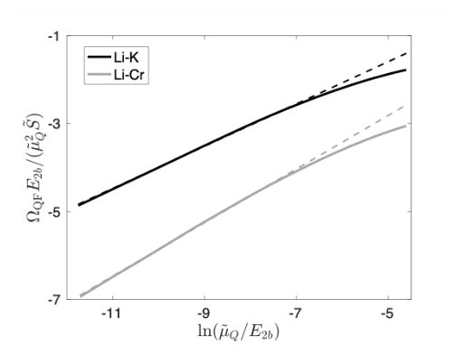
Summary. This paper investigates quantum fluctuations in a 2D quartet superfluid made of one light and three heavy fermions. It demonstrates that including Gaussian fluctuations correctly recovers the expected bosonic equation of state in the deep binding limit. The work establishes a general framework for studying higher-order fermion correlations.
Why it may be interesting. It provides a theoretical framework for extending fluctuation theories from standard pairing to higher-order correlations, which is highly relevant for understanding many-body dynamics and complex cluster formation in ultracold gases.
Main problem. The study aims to understand quantum fluctuations in a quartet superfluid (QSF) of 2D mass-imbalanced Fermi mixtures and to determine if these clusters behave as composite bosons in the deep binding limit.
Main result. The theory successfully reproduces the logarithmic dependence of the 2D equation of state in the deep binding regime, confirming that quartet clusters behave as composite bosons.
Method. The authors use a functional path integral approach with an extended Gaussian fluctuation theory that incorporates dominant four-body correlations.
Model / system. A two-dimensional (2D) Fermi mixture with mass imbalance (heavy and light fermions) in a (1+3) cluster configuration, specifically considering realistic examples like 6Li-40K and 6Li-53Cr.
Key observables. Thermodynamic potential (Omega), equation of state (EoS), gap equation, number equations, and the quartet chemical potential.
Important parameters / regimes. Mass imbalance (mh, ml), 2D scattering length (a), quartet binding energy (E4), and the deep binding limit (reduced chemical potential approaching zero).
Assumptions / limitations. The study focuses on the zero-temperature (T=0) ground state and assumes a specific heavy-to-light number ratio of 3:1.
Figures summary. Figure 1 shows diagrammatic representations of Green's functions and fluctuation matrix elements; Figure 2 plots the thermodynamic potential as a function of the logarithm of the reduced chemical potential for different mass-imbalanced systems.
Paper structure. The paper introduces the problem of quartet superfluidity, presents a mean-field theory for (1+3) clusters, extends this to Gaussian fluctuation theory, provides analytical results for the deep binding limit, and validates the theory with numerical simulations.
We study quantum fluctuations in quartet superfluid (QSF) of two-dimensional (2D) fermion mixtures with mass imbalance. Here QSF is a high-order superfluid that corresponds to the condensation of ($1+3$) clusters, each consisting of a light fermion and three heavy ones. By incorporating the Gaussian fluctuations respecting dominant four-body correlations in this system, our theory successfully produces the logarithmic dependence of the 2D equation of state in the deep binding regime, thereby offering a correct physical picture of quartet clusters behaving as composite bosons. By extending the Gaussian fluctuation theory from pairing to quartet superfluids, our results shed light on quantum fluctuations in general fermion superfluids with arbitrarily high-order correlations.
Authors: Kenji Nakahira
Type: theory · Category: quantum information and computing · PDF: https://arxiv.org/pdf/2605.23217v1
Analysis basis: full PDF text, analyzed in chunks
Topic relevance: quantum measurements 3/5 · entanglement & information structure 2/5
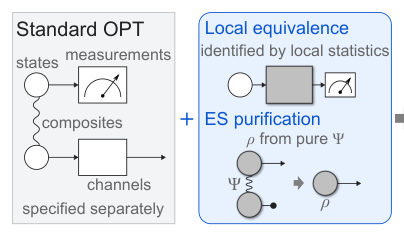
Summary. This paper demonstrates that the entire mathematical structure of finite-dimensional quantum theory can be derived from just two operational principles. By showing that local equivalence and a specific form of purification rule out classical and real-valued theories, it provides a powerful reconstruction of the complex quantum formalism.
Why it may be interesting. This is highly relevant for researchers in quantum foundations and open quantum systems as it provides a fundamental justification for the use of density matrices, POVMs, and CPTP maps, showing they are necessary consequences of basic operational symmetries.
Main problem. The paper seeks to determine if the standard complex quantum formalism can be uniquely derived from a minimal set of operational principles rather than being assumed as a single package.
Main result. The author proves that two operational principles—local input-output statistics identify channels and every state admits an equivalent-system purification—are sufficient to uniquely single out finite-dimensional complex quantum theory.
Method. The work uses a reconstruction approach within the framework of finite-dimensional Causal Operational Probabilistic Theories (OPTs), employing Euclidean Jordan Algebras and the classification of symmetric cones.
Model / system. The framework is an abstract, finite-dimensional Causal Operational Probable Theory (OPT) consisting of systems, states, measurements (POVMs), and channels (CPTP maps) defined within a strict monoidal category.
Key observables. Local input-output statistics, measurement outcomes, and probabilities.
Important parameters / regimes. Finite-dimensional systems, rank of the algebra, and informational dimension.
Assumptions / limitations. The theory assumes a finite-dimensional causal framework, the existence of deterministic effects, and the validity of the two proposed operational principles.
Figures summary. Figure 1 shows a schematic of the reconstruction process from a general OPT to quantum theory; Table I compares classical, real quantum, and complex quantum theories against the two postulates.
Paper structure. The paper follows a logical derivation: establishing the framework of OPTs, applying the two postulates to derive the geometry of state spaces (symmetric cones), proving the no-restriction hypothesis for measurements, and finally using the classification of Jordan algebras to identify the theory as complex quantum theory.
Quantum theory combines density matrices, Born probabilities, tensor-product composites, positive-operator-valued measures (POVMs), and quantum channels. In a finite-dimensional causal operational theory, we prove that two postulates suffice: local input-output statistics identify channels, and every state admits an equivalent-system purification, unique up to reversible dynamics. The full complex quantum formalism follows; every consistent probability rule is realized as a POVM, so measurement no-restriction is derived rather than assumed.
Authors: Piotr Masajada, Aby Philip, Alexander Streltsov
Type: theory · Category: quantum information and computing · PDF: https://arxiv.org/pdf/2605.23443v1
Analysis basis: full PDF text, analyzed in chunks
Topic relevance: entanglement & information structure 3/5
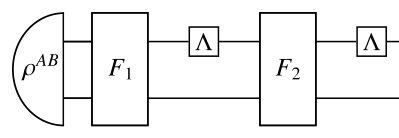
Summary. This paper identifies a fundamental limit for quantum repeaters, proving that entanglement distribution over long distances is only possible if the channel allows for error correction. It quantifies the necessary resource overhead, showing that parallel channel uses must increase logarithmically with network length to prevent exponential entanglement loss.
Why it may be interesting. not directly relevant
Main problem. Investigating the fundamental asymptotic limits of entanglement distribution in quantum networks, specifically determining the conditions under which entanglement can be preserved over arbitrarily long distances.
Main result. The authors establish a dichotomy: entanglement can be preserved asymptotically if and only if the channel admits a correctable subspace; otherwise, entanglement decays exponentially, requiring the number of parallel channels to scale at least logarithmically with the number of nodes.
Method. The study uses information-theoretic tools, including Kraus operator analysis, Stinespring dilation, and entanglement measures like concurrence and entanglement of formation, to derive scaling laws and trace distance bounds.
Model / system. A linear quantum network consisting of $n$ sequential noisy links (nodes) where each link is modeled as $m$ parallel uses of a qudit depolarizing channel.
Key observables. Entanglement of formation, concurrence, Schmidt rank, $G_k$-concurrence, and trace distance to the set of separable states.
Important parameters / regimes. The number of links $n$, the number of parallel channels $m$, the depolarizing parameter $p$, and the decay constant $\kappa$.
Assumptions / limitations. The derivation for logarithmic scaling assumes qudit depolarizing channels; the analysis focuses on finite-dimensional Hilbert spaces and the asymptotic limit where $n o \infty$.
Figures summary. Figure 1 illustrates the entanglement distribution process through a sequence of $n$ noisy channels with intermediate stations applying LOCC filters.
Paper structure. The paper begins by defining the network model and the problem of entanglement decay, followed by a proof of the fundamental dichotomy based on correctable subspaces, an analysis of exponential degradation in the absence of such subspaces, a derivation of the logarithmic resource lower bound for parallel channels, and a discussion of implications for quantum error-correcting codes.
Reliable distribution of quantum entanglement over long distances is a central challenge in quantum information science, fundamentally limited by decoherence in noisy communication channels. In this work, we investigate the asymptotic limits of entanglement distribution across quantum networks utilizing intermediate repeater stations and local operations and classical communication (LOCC). We establish a strict dichotomy: the asymptotic preservation of entanglement over arbitrarily long distances is possible if and only if the underlying quantum channel admits a correctable subspace. For channels lacking such a subspace, we prove that the transmitted state converges exponentially fast to the set of separable states, rendering standard LOCC filtering insufficient. To counteract this exponential degradation, we analyze networks employing parallel channel uses per link. We derive a fundamental lower bound on the physical resource requirements, proving that for channels without a correctable subspace, the number of parallel channels per link must scale at least logarithmically with the number of intermediate stations to sustain a non-zero amount of entanglement. This theoretical limit serves as a stringent benchmark for quantum repeater architectures and underscores the necessity of advanced quantum error-correcting codes, such as qLDPC codes, which show promise in saturating this optimal resource scaling.
Authors: Nour Rizk, Angélique Drémeau, Arnaud Coatanhay
Type: theory · Category: quantum information and computing · PDF: https://arxiv.org/pdf/2605.23547v1
Analysis basis: full PDF text, analyzed in chunks
Topic relevance: correlated / nonlocal dissipation 2/5 · entanglement & information structure 2/5 · methods for driven-dissipative 2/5 · quantum measurements 1/5



Summary. This paper analyzes how underwater environmental factors like turbidity and background light affect the security of the BBM92 quantum key distribution protocol. It specifically quantifies the performance degradation when using non-maximally entangled states. The results highlight the severe limitations on secure communication distances in turbid waters.
Why it may be interesting. This paper is highly relevant to researchers in quantum optics and open quantum systems as it applies the Kraus operator formalism to model decoherence and photon loss in a complex, realistic environment.
Main problem. Investigating the performance and security of the BBM92 entanglement-based QKD protocol in realistic underwater optical channels, specifically addressing the impact of non-maximally entangled states and channel degradation.
Main result. The study finds that increasing water turbidity and reducing the degree of entanglement both significantly decrease the secure transmission distance and Secret Key Rate (SKR).
Method. The authors derive closed-form analytical expressions for QBER and SKR using the Kraus operator formalism and validate these results through Monte Carlo simulations.
Model / system. An entanglement-based BBM92 QKD system where a source generates non-maximally entangled polarization states, propagating through an underwater channel modeled with amplitude-damping and depolarizing Kraus operators.
Key observables. Quantum Bit Error Rate (QBER) and Secret Key Rate (SKR).
Important parameters / regimes. Entanglement parameter (beta), water turbidity (clear, coastal, turbid), atmospheric/background noise levels, and transmission distance (L).
Assumptions / limitations. The source is a well-collimated laser beam with negligible divergence, and the primary channel effects considered are amplitude damping and depolarization rather than all forms of turbulence.
Figures summary. Fig 1 shows the protocol schematic; Fig 2 and 3 illustrate QBER vs. distance for different entanglement degrees and water types; Fig 4(b) shows the impact of reduced entanglement on the SKR.
Paper structure. The paper introduces the problem of underwater QKD, defines the physical model and Kraus-based channel, derives analytical expressions for error rates, validates them via Monte Carlo simulation, and evaluates performance across various environmental scenarios.
Underwater optical channels pose significant challenges to the security and reliability of quantum communication systems due to absorption and scattering. In this paper, we investigate the BBM92 entanglement-based quantum key distribution (QKD) protocol under realistic underwater channel conditions. Photon pairs are prepared in non-maximally entangled states, and the underwater propagation medium is modeled as a quantum channel incorporating both amplitude-damping and depolarizing effects, described within the Kraus operator formalism. The protocol performance is evaluated in terms of quantum bit error rate (QBER) and secret key rate (SKR), analyzed as functions of the entanglement degree and channel degradation parameters. Closed-form analytical expressions for the QBER and SKR are derived for the proposed channel model and validated through Monte Carlo simulations. The proposed framework is then applied to various realistic underwater scenarios, considering different water types, namely clear ocean, coastal, and turbid water, as well as varying atmospheric conditions.
Authors: Zhanxi Wang, Xiaozhe Hao, X. X. Yi
Type: theory · Category: quantum information and computing · PDF: https://arxiv.org/pdf/2605.23250v1
Analysis basis: full PDF text, analyzed in chunks
Topic relevance: correlated / nonlocal dissipation 2/5 · methods for driven-dissipative 2/5 · non-equilibrium dynamics 2/5
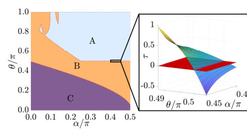
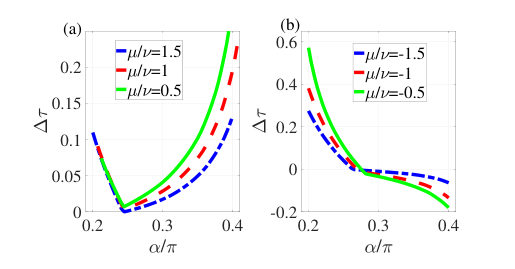
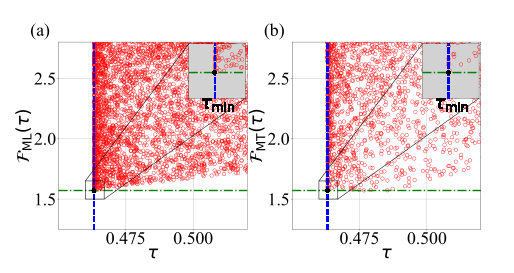
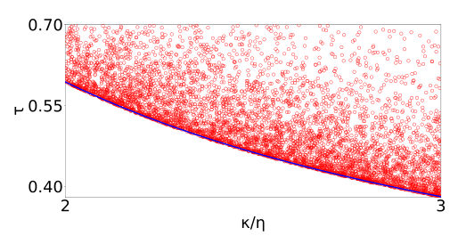
Summary. This paper establishes new fundamental limits on how fast a non-Hermitian quantum system can evolve to an orthogonal state. By extending the well-known MT and ML bounds to non-Hermitian dynamics, the authors identify the specific initial states that allow for the fastest possible evolution.
Why it may be interesting. This is highly relevant for researchers in open quantum systems and quantum optics, as it provides fundamental limits on the speed of state evolution in dissipative or gain-driven environments, which are central to non-Hermitian physics.
Main problem. The paper aims to derive and establish tight, compact Quantum Speed Limit (QSL) bounds, specifically of the Mandelstam-Tamm (MT) and Margolus-Levitin (ML) types, for non-Hermitian quantum systems.
Main result. The authors derive two new, tighter bounds for non-Hermitian QSL that correspond to the MT and ML bounds in Hermitian systems and identify 'fastest initial states' (FIS) that achieve the minimum evolution time.
Method. The derivation utilizes biorthogonal basis theory and trigonometric inequalities applied to the real and imaginary parts of the state overlap within a non-degenerate non-Hermitian framework.
Model / system. A general non-degenerate non-Hermitian Hamiltonian with complex eigenvalues, including specific applications to a two-level system and a three-level PT-symmetric wireless power transfer (WPT) system.
Key observables. Quantum Speed Limit (tau), ML-type bound (F_ML), MT-type bound (F_MT), and Geometric-type bound (F_G).
Important parameters / regimes. Real and imaginary parts of eigenvalues (omega and gamma), the ratio of bounds (alpha), and the parameter delta for studying the approach to the shortest evolution time.
Assumptions / limitations. The system is assumed to be non-degenerate and the Hamiltonian is time-independent; a shifted Hamiltonian is used to ensure non-negative eigenvalues.
Figures summary. Figure 1 compares the difference between the combined QSL bound and the geometric bound against parameters theta and alpha, identifying regions of existence for solutions.
Paper structure. The paper introduces the QSL problem, develops the biorthogonal mathematical framework, derives the new MT and ML-type bounds, analyzes the tightness and saturation conditions of these bounds, and provides numerical illustrations using PT-symmetric systems.
The quantum speed limit (QSL) refers to the maximum speed of a quantum system to evolve from an initial state to its orthogonal states. The bound on the QSL for Hermitian systems, for example the Mandelstam-Tamm (MT) and Margolus-Levitin (ML) as well as Sun-Zheng(SZ) bound, was studied respectively from the perspectives of average value and variance of the system Hamiltonian as well as the geometry of the system. While the compactness of the MT-type, ML-type and SZ-type bounds has been examined well for Hermitian systems, a compact QSL for non-Hermitian systems has not been well studied. In this work, based on the biorthogonal basis theory we derive two distinct and tighter bounds on the QSL for non-Hermitian systems, which correspond to the MT and ML bounds for Hermitian systems. We show that the shortest evolution time corresponding to the two bounds of the non-Hermitian system can be attained by certain initial states, showing the compactness and tightness of our bounds. These initial states dubbed fastest initial states(FIS) are different from that in Hermitian systems. A bound close to QSL for non-FIS is presented and comparison of our bound with others in literature is performed. To illustrate our results, we present a minimal non-Hermitian system to show QSL, and the condition for the shortest evolution time is derived analytically using the present theory.
Authors: Wen Xu, Vinayak Jagadish
Type: theory · Category: quantum information and computing · PDF: https://arxiv.org/pdf/2605.23852v1
Analysis basis: full PDF text, analyzed in chunks
Topic relevance: entanglement & information structure 2/5 · methods for driven-dissipative 2/5 · non-equilibrium dynamics 2/5
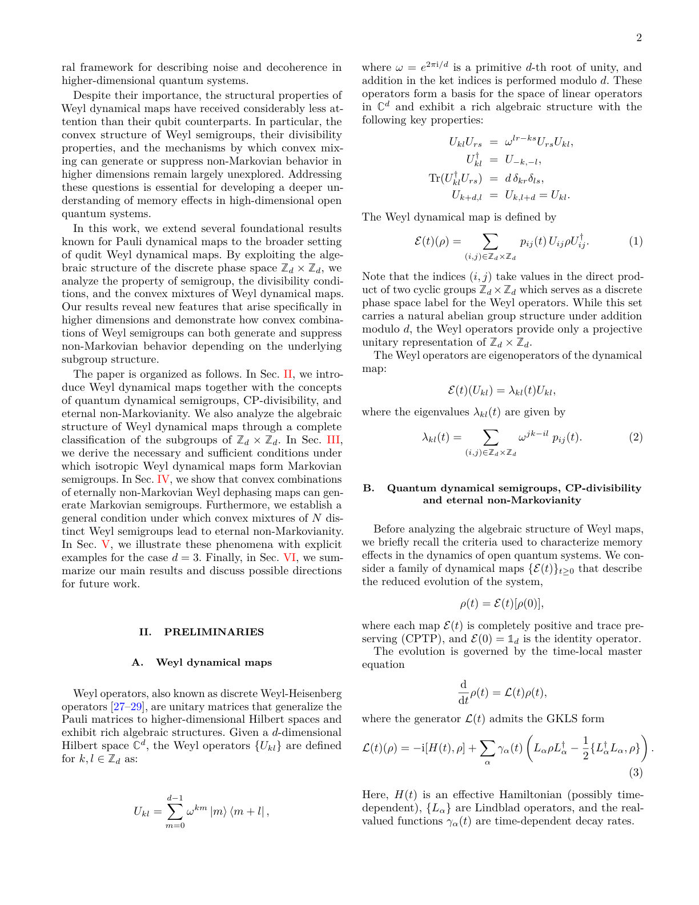
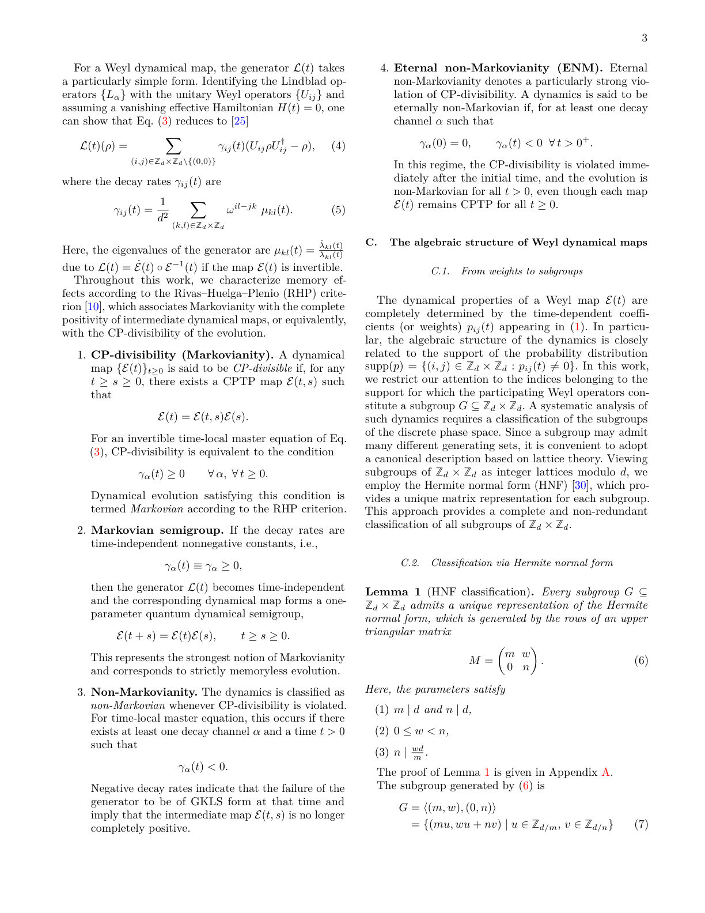
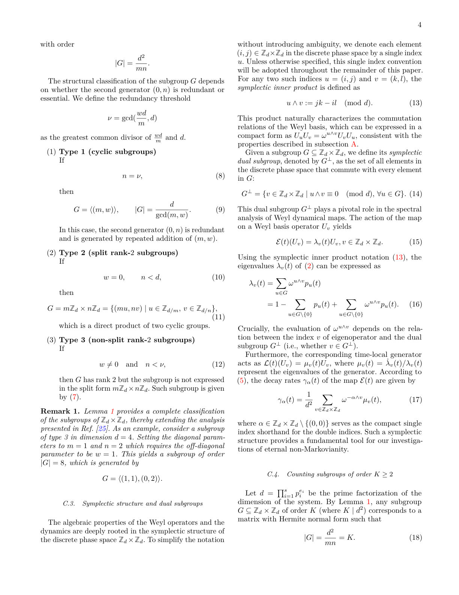
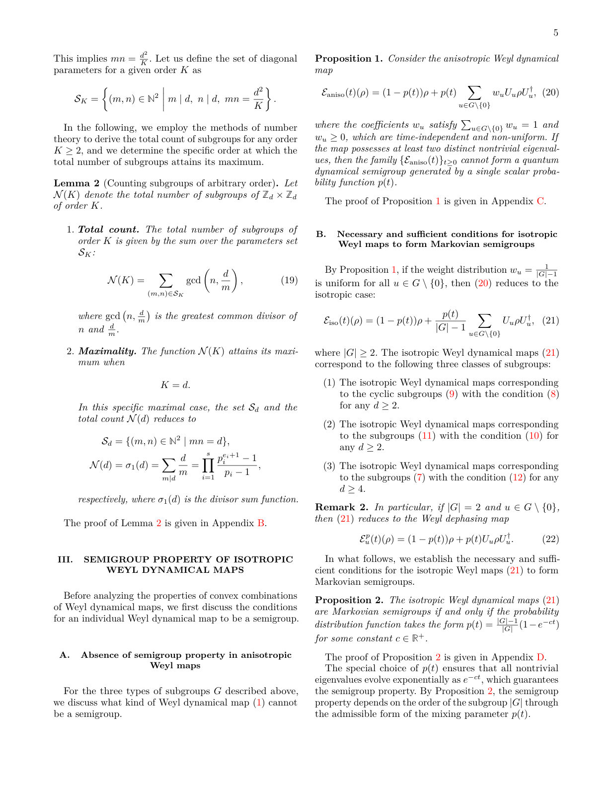
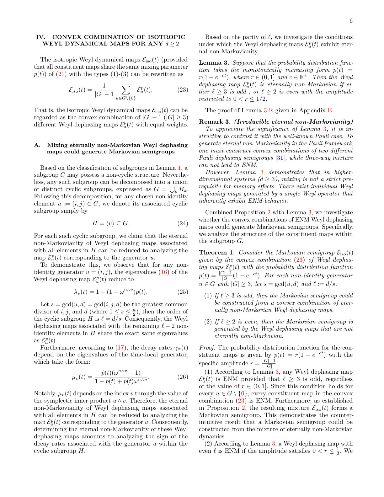
Summary. This paper explores how the algebraic structure of discrete phase space influences quantum memory effects in higher-dimensional systems. It demonstrates that mixing non-Markovian maps can lead to Markovian dynamics and identifies new types of intrinsic, irreducible non-Markovianity in qudits.
Why it may be interesting. This work is highly relevant to researchers in open quantum systems as it extends the theory of non-Markovianity beyond the qubit Pauli framework and reveals counter-intuitive phenomena like the suppression of memory effects through mixing.
Main problem. The paper investigates the emergence, generation, and suppression of non-Markovian dynamics in higher-dimensional (qudit) open quantum systems using Weyl dynamical maps.
Main result. The authors prove that convex combinations of eternally non-Markovian Weyl dephasing maps can generate Markovian semigroups, and they identify the existence of irreducible eternally non-Markovian maps in dimensions d >= 3.
Method. The study employs algebraic classification via the Hermite normal form, symplectic geometry, and number theory to analyze the subgroup structure of the discrete phase space Z_d x Z_d.
Model / system. The model consists of finite-dimensional qudit open quantum systems governed by Weyl dynamical maps acting on a d-dimensional Hilbert space, specifically focusing on Weyl dephasing maps.
Key observables. Decay rates (gamma_alpha(t)), which serve as the primary diagnostic for Markovianity and non-Markovianity.
Important parameters / regimes. Dimension (d), subgroup order (K), parity of the ratio l = d/s, mixing coefficients (x_k), and the probability distribution parameter (r).
Assumptions / limitations. The analysis focuses on cases where the effective Hamiltonian is zero and assumes specific functional forms for the probability distribution p(t).
Paper structure. The paper begins with an algebraic classification of Weyl maps using the Hermite normal form, proceeds to characterize Markovianity and semigroup properties of isotropic and anisotropic maps, analyzes the effects of mixing (convex combinations) on memory effects, and concludes with explicit qutrit examples.
We investigate the emergence of non-Markovian dynamics in finite-dimensional open quantum systems governed by Weyl dynamical maps and their convex combinations. Using the Hermite normal form, we provide a complete classification of the subgroups of the discrete phase space $\mathbb{Z}_d \times \mathbb{Z}_d$, establishing the algebraic framework underlying the Weyl maps. We characterize isotropic Weyl dynamical maps that generate Markovian semigroups and show that anisotropic Weyl maps with nonuniform weight distributions cannot possess the semigroup property. Furthermore, we analyze the role of convexity in the generation and suppression of memory effects. Remarkably, we prove that convex combinations of eternally non-Markovian Weyl dephasing maps can generate Markovian semigroups, demonstrating that non-Markovianity is not additive under mixing. Conversely, we establish a general condition under which convex mixtures of $N$ distinct Weyl semigroups exhibit eternal non-Markovianity. In contrast to the qubit Pauli setting, we further identify the existence of irreducible eternally non-Markovian Weyl dephasing maps, namely, individual dynamical maps that display eternal memory effects without requiring any mixing mechanism. Finally, explicit qutrit examples illustrate the transition among Markovian, non-Markovian and eternally non-Markovian regimes. Our results uncover a fundamental connection among finite phase-space algebra, convex structures, and quantum memory effects, thereby extending the theory of non-Markovian dynamics beyond the Pauli framework.
Authors: Henrique S. Lima, Evaldo M. F. Curado
Type: theory · Category: statistical mechanics · PDF: https://arxiv.org/pdf/2605.22933v1
Analysis basis: full PDF text, analyzed in chunks
Topic relevance: Keldysh / 2PI / non-Gaussian methods 2/5 · non-equilibrium dynamics 2/5 · non-equilibrium universality 2/5
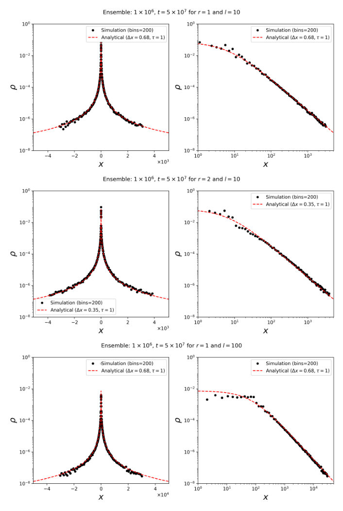
Summary. This paper demonstrates that power-law statistics, often thought to require complex non-local or memory-dependent processes, can emerge from a simple, local Markovian random walk. By using a position-dependent step size, the authors show that a scale-free distribution with a -2 exponent is a natural consequence of a local feedback loop. This provides a new microscopic foundation for understanding heavy-tailed phenomena in various complex systems.
Why it may be interesting. not directly relevant
Main problem. Explaining how heavy-tailed (power-law) probability distributions emerge in complex systems without relying on non-local jumps or non-Markovian memory.
Main result. A strictly local, Markovian random walk with a position-dependent step size generates a robust, non-Gaussian stationary state with a power-law decay of |x|^{-2}.
Method. The authors use a combination of continuum limit derivations, Fokker-Planck equations, Itô calculus, and the Onsager-Machlup path-integral formalism, validated by large-scale GPU-accelerated numerical simulations.
Model / system. A one-dimensional, discrete-time, Markovian random walk where the step size increases deterministically as the walker moves away from the origin, creating a positive feedback loop.
Key observables. Stationary probability distribution (rho_st), mean-squared displacement (MSD), effective velocity, and effective acceleration.
Important parameters / regimes. l (spatial threshold), r (rule parameter), delta_x (spatial increment), and tau (time step).
Assumptions / limitations. The derivation assumes a specific Itô interpretation (step size determined by position before the increment) and a continuum limit approximation where k*s(x) is much less than 1.
Figures summary. Figure 1 displays the probability density versus position on log-linear and log-log scales for various parameters, visually demonstrating the power-law decay.
Paper structure. The paper introduces the problem of heavy tails, defines the Markovian random walk model, provides analytical derivations via the continuum limit and SDEs, presents numerical validation, and discusses the physical implications of the acceleration mechanism.
The emergence of heavy-tailed statistics in complex systems is conventionally attributed to non-local stochastic jumps or non-Markovian memory. Here, we present a one-dimensional random walk where power-law behaviors arise instead from a strictly local, discrete-time Markovian mechanism. The step length is governed by a deterministic function of the walker's position, establishing a positive feedback loop that induces strong effective correlations along the trajectories. Through analytical derivations in the continuum limit and extensive numerical simulations, we show that this rule yields a robust, non-Gaussian stationary state. The exact analytical solution is obtained in the closed form of a symmetric, Lorentz-like distribution, $ρ_{\text{st}}(x) \propto (|x|/l+rΔx)^{-2}$, confirming asymptotic power-law tails that decay as $|x|^{-2}$ over six decades. Furthermore, by employing the Onsager-Machlup path-integral formalism, we demonstrate that effective velocity and acceleration acquire physical meaning along the shortest fluctuation trajectories. Crucially, we find that a non-zero initial acceleration acts as the fundamental mechanism driving the walker away from the origin, ensuring both the emergence of scale-free statistics and the normalizability of the stationary distribution. This minimal pathway provides a new microscopic foundation for the widespread $-2$ power law observed across multidisciplinary complex systems.
Authors: Alonso Contreras-Astorga, José Israel Galindo-Rodríguez
Type: theory · Category: other · PDF: https://arxiv.org/pdf/2605.23853v1
Analysis basis: full PDF text, analyzed in chunks
Topic relevance: analog quantum simulation 2/5 · methods for driven-dissipative 2/5 · non-equilibrium dynamics 2/5
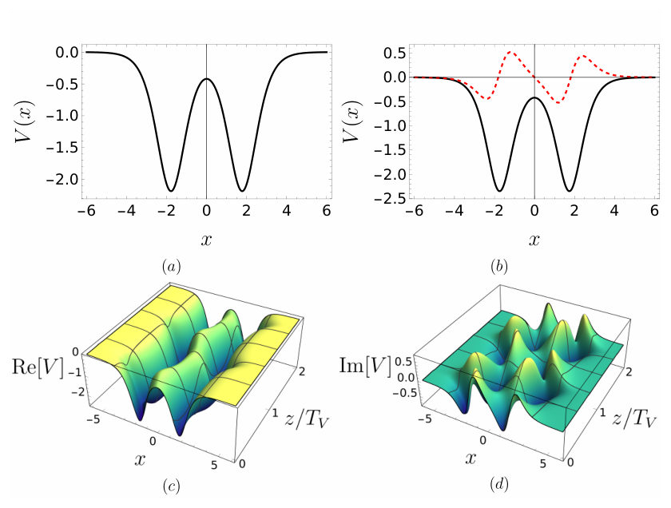
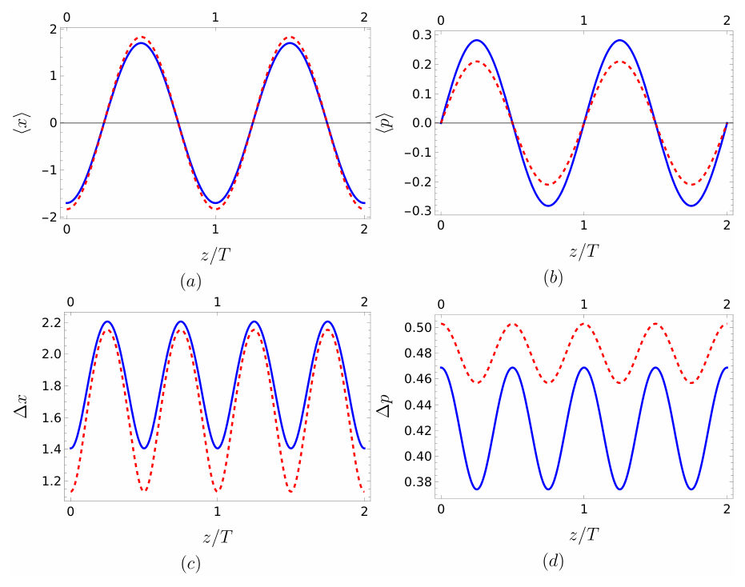
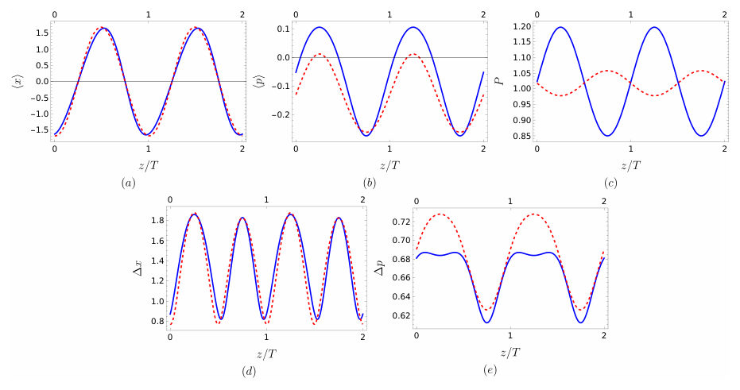
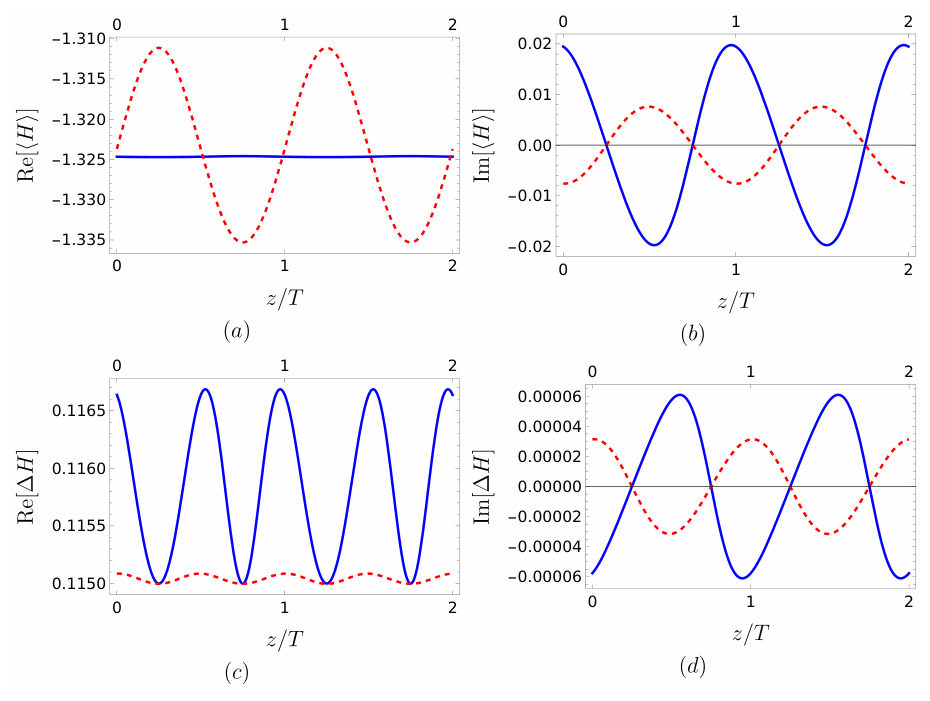
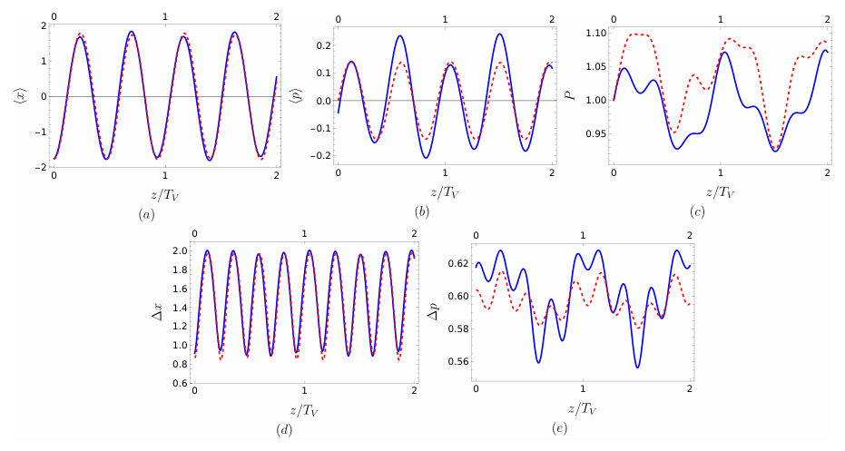
Summary. This paper investigates how well the widely used tight-binding approximation describes light propagation in PT-symmetric waveguides with longitudinal modulation. While the approximation is reliable for tracking spatial trajectories, it fails to accurately predict phase-sensitive quantities like power oscillations and spectral fluctuations. This provides a critical warning for using discrete models to study complex non-Hermitian evolution.
Why it may be interesting. This work is highly relevant to researchers in open quantum systems and quantum optics as it benchmarks a common approximation scheme used to study non-Hermitian dynamics and synthetic quantum systems.
Main problem. Evaluating the validity and accuracy of the tight-binding (TB) approximation compared to exact analytical solutions in PT-symmetric coupled waveguide arrays, particularly under longitudinal modulation.
Main result. The TB model accurately reproduces spatial dynamics like position and beam width but fails to capture complex phase dynamics, exhibiting significant phase shifts in total power and inaccuracies in spectral broadening.
Method. The authors use second-order supersymmetric (Darboux) transformations to derive exact analytical solutions and compare them against a discrete tight-binding framework calibrated via a spectral matching method.
Model / system. A system of two PT-symmetric coupled optical waveguides with longitudinal modulation, modeled by a non-Hermitian paraxial wave equation with a complex, z-dependent refractive index profile.
Key observables. Position expectation value, transverse momentum, spatial uncertainty (delta x, delta p), total power, and Hamiltonian expectation values (real and imaginary parts) using the PT inner product.
Important parameters / regimes. Longitudinal modulation strength, gain/loss parameter (alpha), coupling strength (kappa), and wave-number parameters (k1, k2, k3).
Assumptions / limitations. The TB approximation assumes evolution is governed by discrete hopping between localized modes and is expected to converge as waveguide separation increases.
Figures summary. Figure 2 compares Hermitian evolution of spatial and momentum observables; Figure 3 compares PT-symmetric evolution, highlighting power phase shifts; Figure 4 and 6 analyze Hamiltonian expectation values and fluctuations.
Paper structure. The paper introduces the problem of TB validity, develops exact potentials using SUSY transformations, implements the TB approximation and calibration, and performs a comparative analysis of spatial and energetic dynamics.
The tight-binding (TB) model is a widely adopted approximation scheme for describing light propagation in waveguide arrays. Despite its success, its validity in $\mathcal{PT}$-symmetric systems characterized by strong longitudinal modulation has not been rigorously benchmarked against exact analytical solutions. In this work, we address this gap by performing a comparative analysis between exact continuous solutions derived from $z$-dependent supersymmetric (SUSY) transformations and their corresponding discrete TB approximations. To achieve this, we develop a theoretical model for two PT-symmetric coupled waveguides subject to longitudinal modulation. We then evaluate the performance of the TB framework against the exact SUSY benchmark. Our results delineate the specific validity range of the TB approximation, demonstrating its proficiency in reproducing spatial intensity distributions. However, we also identify its limitations in accurately capturing the complex oscillatory phase dynamics inherent to this non-Hermitian evolution.
Authors: Yong-Feng Yang, Zhao-Rui Tian, Chen Cheng, Hong-Gang Luo
Type: theory · Category: strongly correlated electrons · PDF: https://arxiv.org/pdf/2605.23769v1
Analysis basis: full PDF text, analyzed in chunks
Topic relevance: analog quantum simulation 2/5 · entanglement & information structure 2/5 · non-equilibrium dynamics 2/5
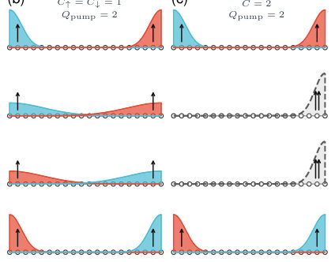
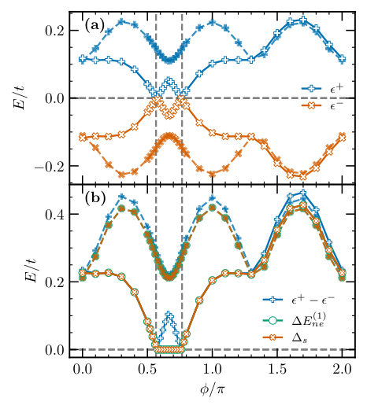
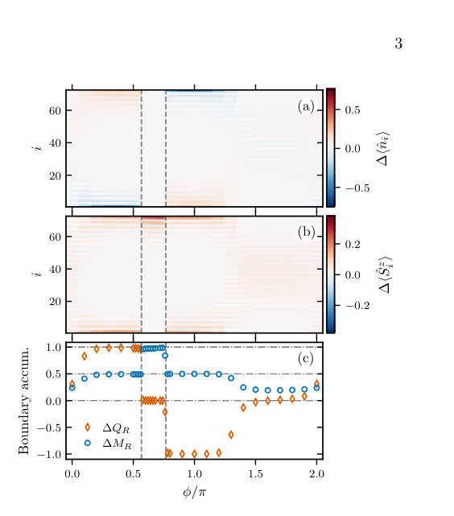
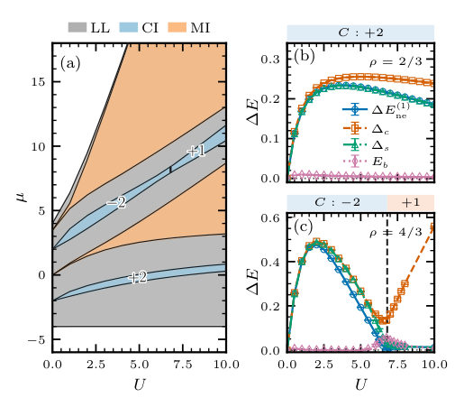
Summary. This paper shows that in a 1D Hubbard pump, strong interactions reconstruct the edge spectral flow, splitting it into two events and creating a localized neutral triplet mode. It also identifies a filling-dependent topological phase transition in the large-U regime. This discovery highlights how correlations can fundamentally alter topological transport properties beyond the single-particle prediction.
Why it may be interesting. It demonstrates a non-perturbative mechanism where interactions decouple spin and charge sectors at a boundary, providing a blueprint for creating neutral topological quasiparticles in correlated systems.
Main problem. Investigating how strong electronic correlations reconstruct the boundary spectral flow and create neutral, spinful edge modes in a many-body Thouless pump.
Main result. The study reveals that interactions split the edge spectral flow into two distinct events and stabilize a neutral, spinful triplet-like boundary mode between them, demonstrating a breakdown of the single-particle mean-field picture.
Method. Density-Matrix Renormalization Group (DMRG) calculations using Matrix Product States (MPS) with finite-size scaling analysis.
Model / system. A 1D spinful Hubbard chain with a period-three spatial modulation of the on-site interaction strength $U_i(\phi)$.
Key observables. Many-body Chern number (C), charge gap ($\Delta_c$), spin gap ($\Delta_s$), neutral excitation gap, local charge and spin density, and integrated boundary charge/magnetization.
Important parameters / regimes. Hubbard interaction strength (U), chemical potential ($\mu$), pumping phase ($\phi$), and filling factor ($ ho = 2/3, 4/3, 1, 5/3$).
Assumptions / limitations. The study assumes the adiabatic limit for the pumping cycle and relies on the accuracy of DMRG for 1D systems.
Figures summary. Figure 1 introduces the model; Figure 3 shows real-space heatmaps of the spatiotemporal evolution of charge and spin excitations.
Paper structure. The paper introduces the modulated Hubbard pump, compares the full model to a Hartree reference, analyzes the $ ho=2/3$ regime for edge splitting and neutral modes, explores the $ ho=4/3$ regime for topological phase transitions, and concludes with broader implications for correlated topological transport.
We show that a sliding spatial modulation of the on-site Hubbard interaction realizes a many-body Thouless pump whose boundary spectral flow is reconstructed by correlations. For a period-three Hubbard chain at filling $ρ=2/3$, density-matrix renormalization group (DMRG) calculations identify a correlated insulator with many-body Chern number $C=+2$, corresponding to two units of charge pumped per cycle. Its excitation spectrum separates the charge gap from the lowest neutral spin gap, revealing an interacting bulk response beyond a simple spin-degenerate band pump. Under open boundary conditions, this contrast becomes even more pronounced. A spin-degenerate Hartree/Aubry-André-Harper reference pump exhibits simultaneous edge flow in the two spin channels, whereas the full modulated Hubbard model suppresses the boundary doublon channel and splits the spectral flow into two distinct edge events. Between these events, the boundary charge is neutralized while a neutral, spinful triplet-like excitation is localized at the edge. The global $μ-U$ phase diagram reveals filling-dependent topology: the $ρ=2/3$ regime remains in the $C=+2$ sector, while $ρ=4/3$ regime undergoes a spin-gap-closing transition from a $C=-2$ pump to a distinct $C=+1$ topological Mott pump.
Authors: Yusuf Turek, Ming-Yan Sun, Xiao-Xi Yao
Type: theory · Category: quantum information and computing · PDF: https://arxiv.org/pdf/2605.23617v1
Analysis basis: full PDF text, analyzed in chunks
Topic relevance: entanglement & information structure 2/5 · interference shaping light 2/5 · quantum measurements 2/5
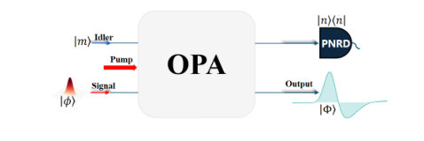
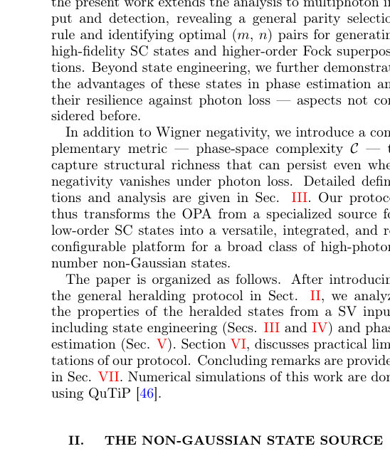
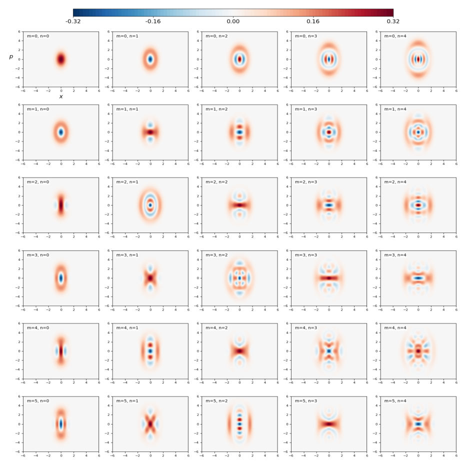
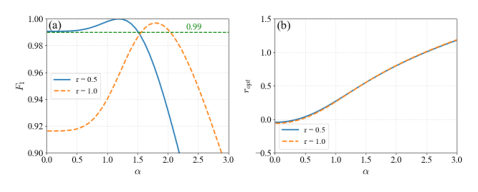
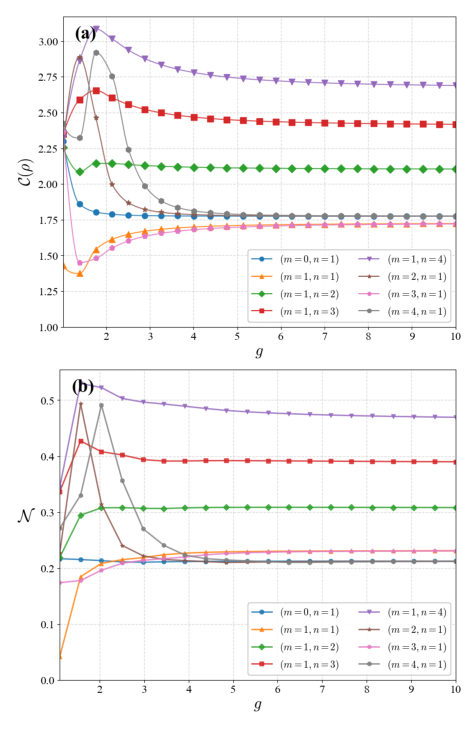
Summary. This paper proposes a new method to create complex quantum states, such as Schrödinger cat states, using an optical parametric amplifier and multiphoton detection. This approach is much more efficient than traditional methods and produces states that are robust against photon loss. These states are highly valuable for advancing quantum computing and high-precision quantum sensing.
Why it may be interesting. It provides a scalable, high-efficiency protocol for engineering complex non-Gaussian states and GKP-like states, which are essential resources for fault-tolerant continuous-variable quantum computing and quantum-enhanced metrology.
Main problem. The difficulty of generating high-fidelity, large-amplitude non-Gaussian states (like Schrödinger cat states) for continuous-variable quantum computing and metrology using conventional, low-efficiency photon-subtraction methods.
Main result. The authors propose an OPA-based multiphoton heralding scheme that efficiently generates large-amplitude squeezed Schrödinger cat states and parity-selective Fock superpositions with significantly higher success probabilities than beam-splitter methods.
Method. Numerical simulations using QuTiP to analyze an Optical Parametric Amplifier (OPA) setup, optimizing gain and squeezing parameters to achieve high-fidelity target states.
Model / system. An Optical Parametric Amplifier (OPA) acting as a two-mode squeezing unitary, where a squeezed vacuum is injected into the signal port and $m$ photons are injected into the idler port, with $n$ photons detected at the idler output.
Key observables. Wigner negativity, phase-space complexity (via Wehrl entropy and Fisher information), state fidelity, success probability, and Quantum Fisher Information (QFI).
Important parameters / regimes. Idler input photon number ($m$), detected photon number ($n$), OPA gain ($g$), input squeezing ($r$), and coherent amplitude ($\alpha$).
Assumptions / limitations. The system is subject to modeled photon loss and dephasing via the Lindblad master equation; detection efficiency is assumed to be 90%.
Figures summary. Schematic of the non-Gaussian source; Wigner functions for various $(m, n)$ configurations; plots of negativity and complexity vs. OPA gain; fidelity vs. amplitude; and QFI comparisons against SQL and HL limits.
Paper structure. The paper introduces the problem of non-Gaussian state generation, describes the OPA-based heralding mechanism and mathematical model, presents results for various photon-number configurations and their fidelity, evaluates robustness against loss and dephasing, and discusses applications in quantum metrology.
We propose a multiphoton heralding scheme using an optical parametric amplifier (OPA) that converts squeezed vacuum into two families of non-Gaussian states: large-amplitude squeezed Schrödinger cat states and low-order parity-selective Fock superpositions. By injecting m photons into the idler port and detecting n photons at the output, effective high-order photon subtraction is realized in a single OPA device. The heralded states exhibit strong Wigner negativity and high phase-space complexity. Remarkably, under photon loss, the complexity remains substantial even after negativity vanishes, indicating a loss-resilient quantum resource. These states also surpass the Heisenberg limit in phase estimation. Our protocol establishes the OPA as a versatile platform for generating non-Gaussian states, with promising applications in loss-resilient quantum metrology and fault-tolerant quantum information processing.
Authors: Anna Biggs, Stefano Trezzi
Type: theory · Category: other · PDF: https://arxiv.org/pdf/2605.23880v1
Analysis basis: full PDF text, analyzed in chunks
Topic relevance: Keldysh / 2PI / non-Gaussian methods 2/5 · correlated / nonlocal dissipation 2/5 · entanglement & information structure 2/5
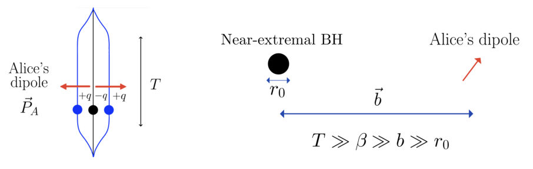
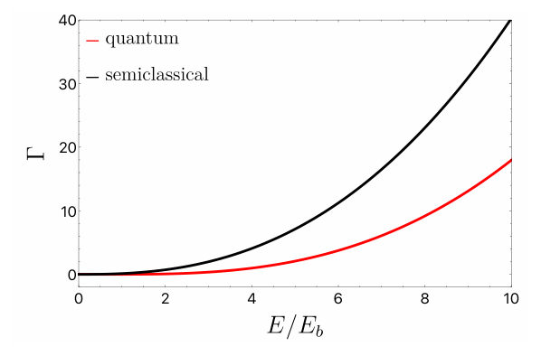
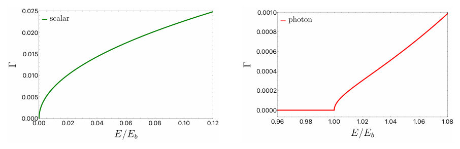
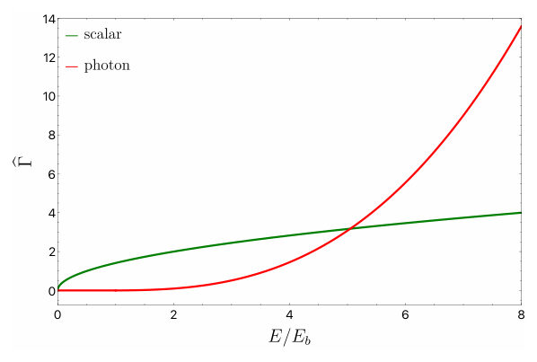
Summary. This paper demonstrates that quantum gravity effects in near-extremal black holes can suppress the decoherence of external quantum systems due to a spin-induced energy gap. It reveals that, unlike the semiclassical prediction, certain black holes can be 'transparent' to quantum superpositions, thereby enhancing coherence.
Why it may be interesting. not directly relevant
Main problem. The paper investigates whether the decoherence of a quantum system in the exterior of a near-extremal charged black hole is a universal feature or if quantum gravity effects can suppress it.
Main result. The authors show that for near-extremal black holes, a spin-induced energy gap causes the decoherence rate to vanish at late times for certain energy regimes, meaning quantum gravity effects actually enhance the coherence of the external system.
Method. The study uses a low-energy effective theory approach, employing gravitational path integrals, the Schwarzian action, and an expansion of the influence functional to calculate the evolution of the reduced density matrix.
Model / system. The system consists of a single electrically charged particle (a qubit/dipole) in a spatial superposition held stationary outside a near-extremal Reissner-Nordström black hole, with interactions mediated by the electromagnetic field.
Key observables. Decoherence rate (Gamma), absorption cross-section, and the evolution of the reduced density matrix.
Important parameters / regimes. Near-extremality, energy scale (Eb), spin-induced energy gap, Hawking temperature, and the low-frequency/late-time limits.
Assumptions / limitations. The particle's separation and recombination are performed slowly enough to neglect radiation emission; the analysis focuses on electromagnetic interactions and the Schwarzian regime.
Figures summary. Figure 1 illustrates the experimental setup; Figure 2 compares semiclassical and Schwarzian-corrected decoherence rates; Figure 3 compares decoherence rates for scalar and electromagnetic fields, highlighting the transparency window for photons.
Paper structure. The paper introduces the problem of black hole-induced decoherence, defines the physical model and effective theory, performs perturbative calculations of the decoherence rate, compares different field types (scalar vs. photon), and validates the quantum results by matching them to the semiclassical limit.
We study the decoherence induced by near-extremal charged black holes on quantum systems in their exterior. Specifically, we analyze a thought experiment recently discussed in the literature, where the quantum system is a charged particle prepared in a spatial superposition. Near-extremal black holes are known to exhibit large quantum metric fluctuations of the near-horizon geometry at low temperatures. We show that, at late times, if the black hole is sufficiently close to extremality, these quantum gravity effects make the decoherence rate vanish. This phenomenon is due to a spin-induced energy gap in the quantum black hole spectrum. For energies above the gap, the decoherence rate becomes nonzero, but is still suppressed relative to semiclassical expectations, so these quantum gravity effects always enhance the coherence of the superposition.
Authors: Piotr Frydrych
Type: theory · Category: disordered systems and neural networks · PDF: https://arxiv.org/pdf/2605.23603v1
Analysis basis: full PDF text, analyzed in chunks
Topic relevance: driven-dissipative phase transition 2/5 · non-equilibrium dynamics 2/5 · non-equilibrium universality 2/5
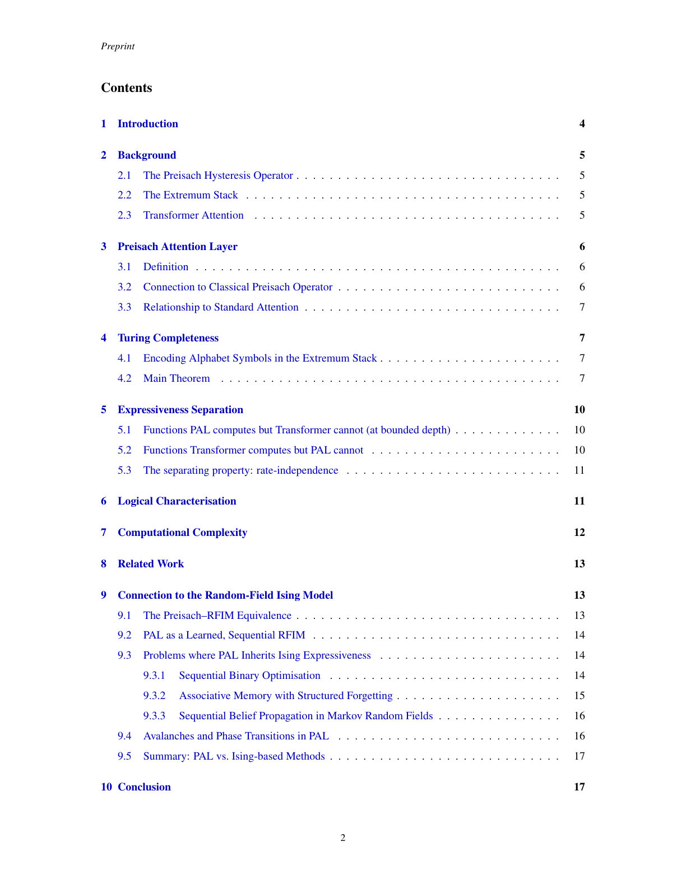
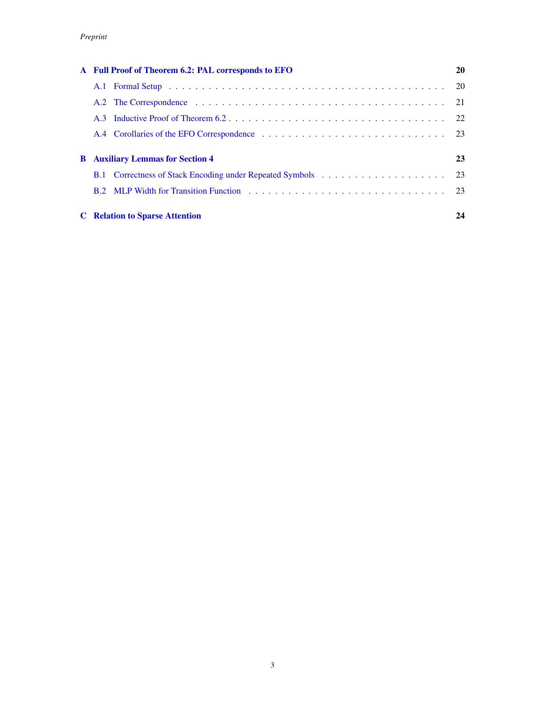
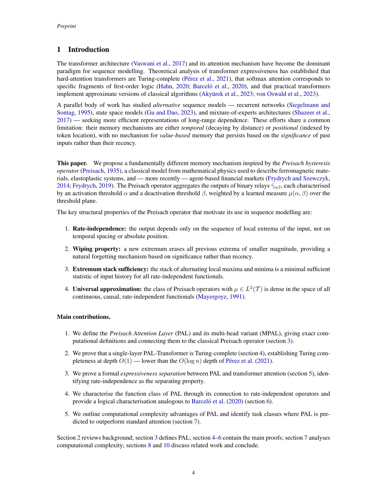
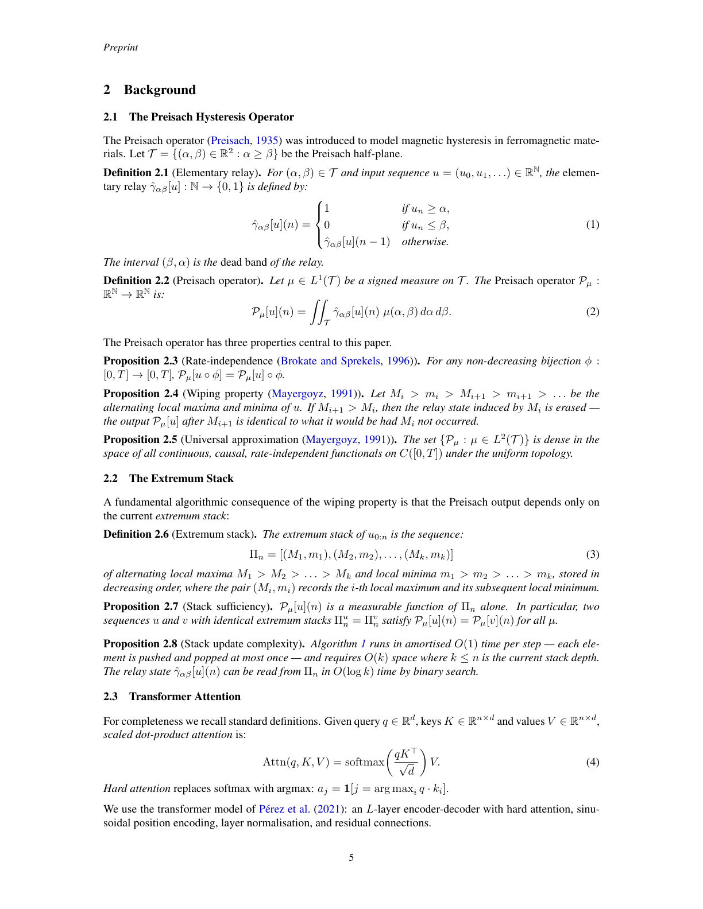
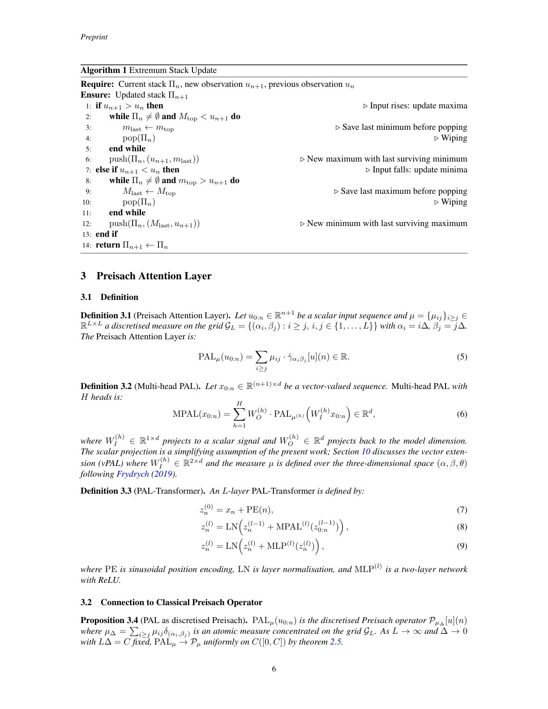
Summary. This paper introduces a new neural network attention mechanism based on the physics of hysteresis (the Preisach model). It demonstrates that this architecture can process sequences more efficiently than Transformers for certain tasks and is theoretically capable of universal computation with minimal depth.
Why it may be interesting. The paper connects neural architecture design to the physics of hysteresis and the Random-Field Ising Model, specifically exploring phase transitions, avalanche dynamics, and the ability of a system to track historical extrema, which is highly relevant to non-equilibrium statistical mechanics.
Main problem. The paper addresses the limitations of current sequence modeling architectures in handling long-range dependencies based on value significance rather than temporal recency, and explores the computational expressiveness of a new hysteretic attention mechanism.
Main result. The authors prove that the Preisach Attention Layer (PAL) is Turing-complete at O(1) depth and establish that its function class is incomparable to standard Transformers, specifically excelling at computing historical range statistics via rate-independence.
Method. The authors introduce the Preisach Attention Layer (PAL), which replaces softmax attention with a binary relay operator based on the Preisach hysteresis model, and use formal proofs involving 2-stack pushdown automata and Extremum First-Order Logic.
Model / system. The model is a Preisach Attention Layer (PAL) based on the classical Preisach hysteresis operator, which aggregates binary relays with learned activation/deactivation thresholds. It is also shown to be a sequential, non-equilibrium generalization of the mean-field Random-Field Ising Model (RFIM) at zero temperature.
Key observables. Extremum stack (local maxima and minima), relay activation states, and magnetization-like aggregate outputs.
Important parameters / regimes. Activation and deactivation thresholds (alpha, beta), Preisach measure (mu), sequence length (n), and disorder strength (Delta).
Assumptions / limitations. Assumes arbitrary precision arithmetic for Turing completeness proofs and requires smooth sigmoid relaxation of discontinuous relays for practical gradient-based training.
Figures summary. The notes do not provide specific descriptions of figures, but mention tables comparing complexity (Time/Memory) and expressiveness across architectures.
Paper structure. The paper introduces the PAL architecture, establishes its Turing completeness via 2-PDA simulation, proves expressiveness separation from Transformers using rate-independence, characterizes its logical framework via Extremum First-Order Logic, and establishes a physical equivalence to the Random-Field Ising Model.
We introduce the Preisach Attention Layer (PAL), a novel sequence modelling architecture grounded in the classical Preisach hysteresis operator from mathematical physics. PAL replaces the softmax attention mechanism with a binary relay operator parameterised by learned activation and deactivation thresholds, maintaining a stack of local extrema as its internal state. A single-layer PAL-Transformer with O(1) depth is Turing-complete under arbitrary precision arithmetic, achievable through simulation of a two-stack pushdown automaton -- in contrast to the O(log n) depth required by standard hard-attention transformers. Second, we prove that the function classes computable by PAL and by the transformer are incomparable: PAL computes historical range statistics in O(1) layers that require O(log n) layers for transformers, while transformers support random-access retrieval that PAL cannot perform without auxiliary state. The separating property is rate-independence -- PAL responds only to the sequence of local extrema, not to absolute token positions or temporal spacing. Third, we show that the extremum stack constitutes a minimal sufficient statistic of the input history for all rate-independent functionals, providing a formal analogue of the wiping property in classical hysteresis theory. PAL is thus an efficient architecture for tasks with long episodic memory and weak positional dependence, with O(n log n) total inference cost versus O(n^2) for standard attention.
Authors: Luca Cappelli, Sauro Succi
Type: theory · Category: quantum information and computing · PDF: https://arxiv.org/pdf/2605.23380v1
Analysis basis: full PDF text, analyzed in chunks
Topic relevance: analog quantum simulation 2/5 · methods for driven-dissipative 2/5 · non-equilibrium dynamics 1/5
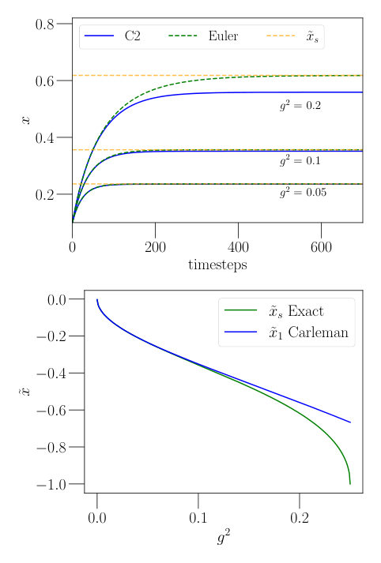
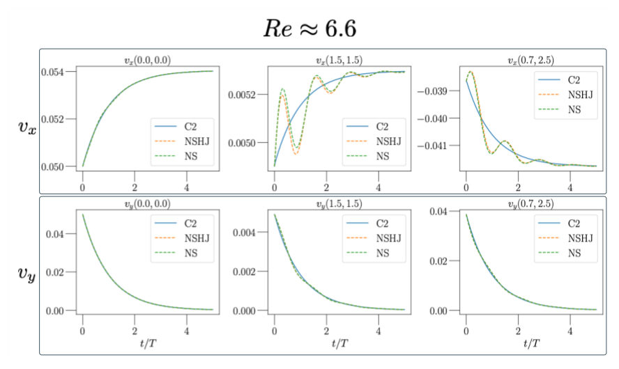
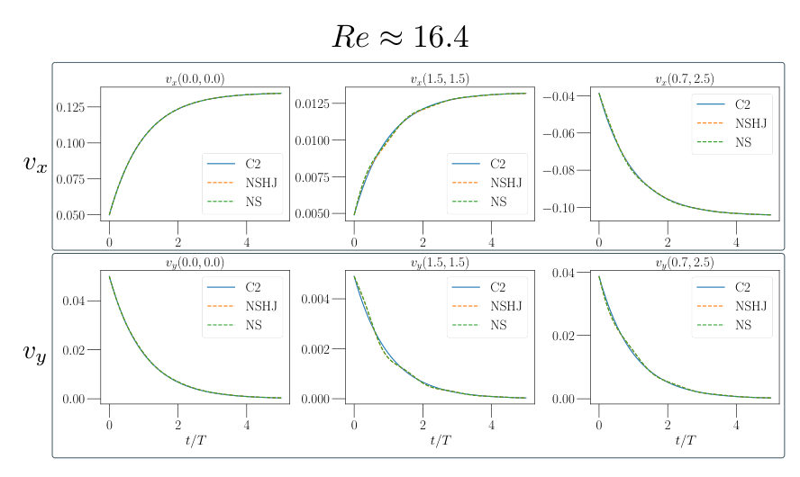
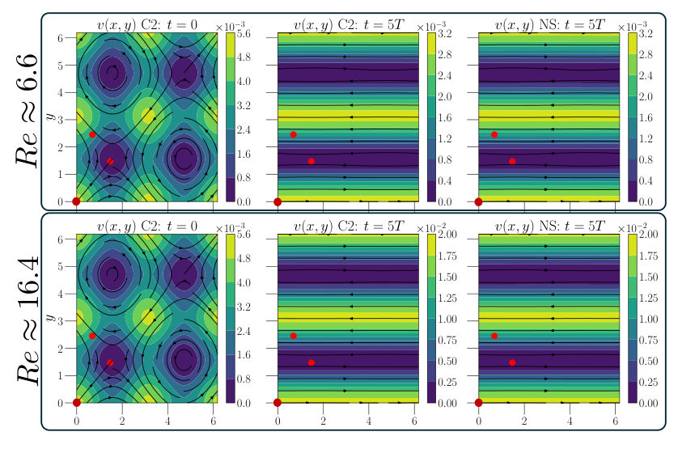
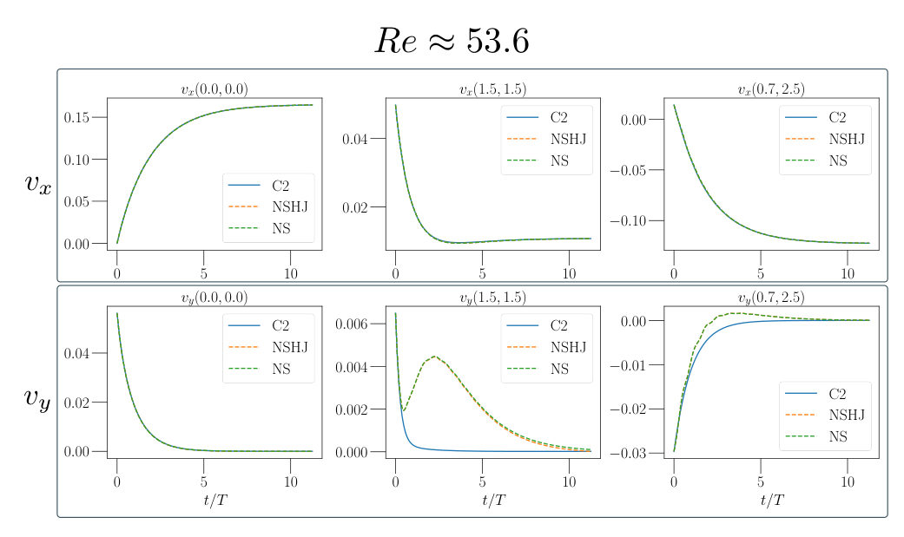
Summary. The paper demonstrates that a second-order Carleman linearization can accurately recover the steady-state solutions of 2D fluid flows, even when it fails to capture the initial transient dynamics. This finding is significant because it provides a potential method for simulating nonlinear fluid dynamics on quantum computers by transforming them into a linear framework.
Why it may be interesting. This is interesting because it proposes a mathematical bridge (Carleman linearization) to map nonlinear classical fluid dynamics into a linear framework suitable for quantum algorithms, suggesting a path for 'quantum-centric' hybrid simulations of complex flows.
Main problem. Addressing the incompatibility between the nonlinear structure of the Navier-Stokes equations and the linear framework required for quantum simulation, specifically investigating if low-order Carleman linearization can recover steady-state solutions.
Main result. The second-order Carleman truncation (C2) successfully recovers the steady-state (asymptotic) solutions of 2D forced fluid flows at moderate Reynolds numbers, acting as a temporal filter that smooths out high-frequency transients.
Method. The authors use Carleman linearization to transform nonlinear equations into a higher-order linear form, applying a second-order truncation (C2) and evaluating it via an explicit Euler time-marching scheme on the Navier-Stokes-Hamilton-Jacobi formulation.
Model / system. The study focuses on two-dimensional, incompressible, viscous fluid flows (specifically Kolmogorov-like flow) at moderate Reynolds numbers, using a forced logistic decay equation as an analytical toy model.
Key observables. Velocity field components (vx, vy), density (rho), scalar potential (chi), and L2 relative error of the velocity field.
Important parameters / regimes. Reynolds number (Re up to ~100), forcing amplitude (f0), viscosity (nu), and the growth parameter (g2) in the toy model.
Assumptions / limitations. The approximation is limited to moderate Reynolds numbers and cannot capture sudden changes or detailed features of the transient phase; it assumes the steady state is the primary target for recovery.
Figures summary. Figure 1 compares the evolution of the toy model to show steady-state recovery; Figures 2-4 demonstrate velocity field evolution and high-accuracy agreement between C2 and Navier-Stokes at low Re; Figures 5-6 show that while C2 recovers stationary states, it fails to capture sudden transient signal rises.
Paper structure. The paper begins with an analytical proof using a forced logistic toy model, moves to the application of the C2 approximation to 2D Navier-Stokes-Hamilton-Jacobi equations, presents numerical results for various Reynolds numbers, and concludes with implications for hybrid quantum-classical fluid simulations.
It is shown that the lowest (second) order truncation of the Carleman linearization of the fluid equations (C2) recovers not only the initial transient of the time evolution but also its late stage, namely the steady-state solution. This asymptotic property is first proved analytically for the decaying logistic with external forcing and then shown to hold to a significant degree of accuracy also for the fairly more complex case of two-dimensional fluid flows at moderate Reynolds number. This time-asymptotic property opens interesting prospects for the simulation of steady-state solutions of the fluid equations on quantum computers.
Authors: Niharika Bhuyan, Diana Thongjaomayum
Type: theory · Category: disordered systems and neural networks · PDF: https://arxiv.org/pdf/2605.23436v1
Analysis basis: full PDF text, analyzed in chunks
Topic relevance: non-equilibrium dynamics 2/5 · non-equilibrium universality 2/5
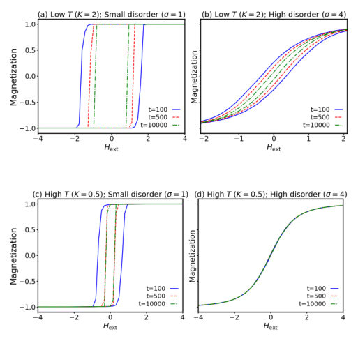
Summary. This study examines how thermal fluctuations and disorder interact to influence the scaling behavior of spin avalanches in the Random Field Ising Model. It demonstrates that the characteristic power-law distributions found in zero-temperature models are suppressed by high temperature or high disorder. The findings provide insight into the stability of critical behavior in real-world, finite-temperature magnetic systems.
Why it may be interesting. not directly relevant
Main problem. Investigating how the interplay between temperature and disorder affects the prevalence of power-law behavior in spin avalanches, bridging the gap between zero-temperature models and finite-temperature physical systems.
Main result. Power-law behavior survives only in regimes of low temperature or small to intermediate disorder; increasing temperature or disorder leads to the blurring of the power law and the development of a peaked distribution.
Method. Monte Carlo simulations using Glauber dynamics on a large 2D triangular lattice, with results averaged over multiple disorder configurations.
Model / system. The 2D Random Field Ising Model (RFIM) on a 999x999 triangular lattice with ferromagnetic nearest-neighbor interactions and a Gaussian random field.
Key observables. Magnetization, hysteresis loop width (coercivity), remanent magnetization, avalanche size distribution, and the power-law decay exponent (alpha).
Important parameters / regimes. Temperature (T), random field strength (sigma), relaxation time (t), and external magnetic field (Hext).
Assumptions / limitations. The system follows Glauber dynamics in contact with a heat bath; the random field is sampled from a Gaussian distribution.
Figures summary. Fig 1 shows hysteresis loop narrowing with increasing relaxation time; Fig 2 and 3 show the evolution of remanent magnetization; Fig 4 shows hysteresis loops at different temperatures; Fig 5 shows avalanche size distributions across different disorder and time scales.
Paper structure. The paper introduces the RFIM problem, describes the Monte Carlo methodology and model parameters, presents results regarding the effects of temperature, disorder, and relaxation time on magnetization and avalanches, and concludes with a comparison to experimental Barkhausen noise.
The nonequilibrium zero-temperature Random Field Ising Model (RFIM) has been extensively studied to understand critical response and avalanches in disordered driven systems. The emergence of power-law behaviour is observed over a wide region around the critical point. These studies however, are confined to zero-temperature dynamics. We study the role of temperature, which is inevitable in real experiments, in the context of RFIM on triangular lattices. We explore the interplay of different parameters: temperature, random field strength, and relaxation time which affect the prevalence of power-law behaviour on the lattice. The results indicate that power-law survives only in the regime of low temperature or small and intermediate disorder. Variations in temperature and disorder have similar affects on the avalanche-size distribution, indicating their strong correspondence. We also discuss the process of blurring out of the power law on increasing temperature or disorder.
Authors: Nour Rizk, Hesham S. Ibrahim, Angélique Drémeau, Arnaud Coatanhay
Type: theory · Category: quantum information and computing · PDF: https://arxiv.org/pdf/2605.23557v1
Analysis basis: full PDF text, analyzed in chunks
Topic relevance: methods for driven-dissipative 2/5 · quantum measurements 2/5

Summary. This paper proposes an enhanced CV-QKD protocol for underwater communication by combining virtual photon subtraction with a multiple-symbol detection scheme. It demonstrates that processing blocks of symbols allows the receiver to mitigate turbulence-induced fading without needing channel state information. The study shows that this approach significantly reduces the error rate in both clear and coastal ocean environments.
Why it may be interesting. This paper is highly relevant to quantum optics and quantum information researchers interested in non-Gaussian state engineering (photon subtraction) and the development of robust quantum communication protocols in highly dissipative and fluctuating environments.
Main problem. Improving the robustness of Continuous-Variable Quantum Key Distribution (CV-QKD) against severe underwater channel impairments, including high attenuation, scattering, and turbulence-induced fading.
Main result. The proposed Quantum Multiple-Symbol Detection (QMSD) scheme, combined with Virtual Photon Subtraction (VPS), provides the highest robustness against underwater turbulence, achieving the lowest Quantum Bit Error Rate (QBER) compared to Homodyne and QMLD schemes.
Method. The authors derive analytical, semi-closed-form expressions for QBER using mathematical techniques like Laplace transforms and hypergeometric functions, and validate these results using Monte Carlo simulations.
Model / system. An underwater CV-QKD system using a Two-Mode Squeezed Vacuum (TMSV) state, where Virtual Photon Subtraction is implemented via post-selection. The channel is modeled with the Beer-Lambert law for attenuation and an Erlang distribution to approximate turbulence-induced fading.
Key observables. Accepted-only Quantum Bit Error Rate (QBER), photon-counting statistics, and transmission probability.
Important parameters / regimes. TMSV squeezing parameter (zeta), photon-subtraction order (m), sequence length (L), turbulence parameters (lambda, theta), and water types (clear vs. coastal).
Assumptions / limitations. Turbulence is modeled using an Erlang distribution as an approximation of the log-normal model; the VPS is implemented via post-selection rather than physical hardware; the receiver does not require instantaneous Channel State Information (CSI).
Figures summary. Figure 1 shows the system schematic; Figure 2 compares QBER vs. distance for different detection schemes and photon-subtraction orders; Figure 3 compares performance in different water types; Figure 4 shows the impact of thermal noise; Figure 5 shows the impact of sequence length.
Paper structure. The paper introduces the underwater CV-QKD problem, describes the VPS-based transmitter and the three receiver configurations, provides the mathematical derivation of the QBER under Erlang fading, presents simulation results across various environmental parameters, and concludes with a summary of findings.
Continuous-variable quantum key distribution (CV-QKD) is a promising approach for secure underwater quantum communications (UQCs), where propagation loss, scattering, turbulence, and receiver thermal noise can severely degrade the transmission of quantum states. In this paper, we propose an underwater CV-QKD system with virtual photon subtraction (VPS), implemented through post-selection of Alice's measurement outcomes, without requiring channel state information (CSI) at the receiver. Three VPS-based system configurations are analyzed, corresponding to homodyne detection (VPS-HD), quantum maximum-likelihood detection (VPS-QMLD), and quantum multiple-symbol detection (VPS-QMSD). System performance is evaluated in terms of the accepted-only quantum bit error rate (QBER), where underwater turbulence is modeled by an Erlang distribution. Analytical and semi-closed-form QBER expressions are derived for the three configurations and validated through Monte Carlo simulations for different water types and system parameters. The results show close agreement between analytical and simulation results and demonstrate that VPS-QMSD provides the best robustness against underwater turbulence, achieving the lowest QBER compared with VPS-QMLD and VPS-HD.
Authors: Hao Zhang, Matthew Otten
Type: theory · Category: numerical methods · PDF: https://arxiv.org/pdf/2605.22977v1
Analysis basis: full PDF text, analyzed in chunks
Topic relevance: entanglement & information structure 2/5
Summary. The authors present a method called Core-Optimized Orbitals (COO) that significantly improves the efficiency of Configuration Interaction by optimizing the orbital basis to absorb dynamical correlation. This approach allows for ultra-large-scale simulations of complex multi-center systems, outperforming traditional tensor network methods in parameter efficiency.
Why it may be interesting. not directly relevant
Main problem. The computational cost of simulating strongly correlated many-body systems scales with the number of variational parameters, making traditional Configuration Interaction (CI) methods too parameter-heavy for large-scale simulations.
Main result. The Core-Optimized Orbitals (COO) method achieves massive compression, reaching accuracies in [Fe4S4] that would require 3e14 determinants in a localized basis, and outperforms state-of-the-art DMRG by 10-100x in parameter efficiency for multi-center systems.
Method. A three-phase approach (Global Optimization, Local Refinement, and Fast Expansion) that co-optimizes a sparse CI wavefunction (TrimCI) with a single-particle orbital basis via orbital rotations.
Model / system. The study focuses on strongly correlated multi-center iron-sulfur clusters ([Fe2S2], [Fe4S4], and the P-cluster) and a tunable Hubbard-on-graph model used to analyze efficiency gains.
Key observables. Energy error relative to FCI, determinant count (N_det), orbital mutual information, and wavefunction compactness (dominant-determinant weight).
Important parameters / regimes. Determinant scales up to 5.12 billion; orbital rotation via matrix exponential of an antisymmetric matrix kappa; expansion growth factors.
Assumptions / limitations. Assumes that the orbital rotations learned from a small core are transferable to larger expansions and that the initial orbital guess (HF or LMO) is reasonably close to the ground state.
Figures summary. Visualizations of orbital rotation and wavefunction collapse; energy convergence and power-law scaling of error vs. determinant count; orbital mutual information showing entanglement across atomic centers; and energy spread of initial seeds into spin basins.
Paper structure. The paper introduces the COO method, details the three-phase TrimCI+COO workflow, demonstrates massive compression on iron-sulfur clusters, provides a theoretical decomposition of efficiency gains using a Hubbard-on-graph model, and describes the large-scale distributed GPU architecture used for billion-determinant calculations.
The cost of simulating quantum many-body systems - on classical or quantum hardware - scales with the number of variational parameters, so progress at fixed computational budget hinges on more parameter-efficient ansätze. Configuration Interaction (CI) is widely dismissed as parameter-heavy; we show this verdict is an artifact of the orbital basis. Co-optimizing the orbital basis with a sparse CI wavefunction - a method we call Core-Optimized Orbitals (COO) - absorbs a large fraction of the dynamical correlation directly into the single-particle basis, cutting the determinant count by several orders of magnitude beyond the already compact TrimCI ansatz on which it builds. On [Fe$_4$S$_4$] (54e, 36o), a billion-determinant TrimCI+COO wavefunction reaches accuracy that would require $3\!\times\!10^{14}$ determinants in a localized basis. At matched accuracy, it is $8\times$ more compact than the largest unrestricted-DMRG benchmark ($25\times$ with PT2). Across the iron-sulfur series - from [Fe$_2$S$_2$] (30e,20o) to the P-cluster (114e,73o) - TrimCI+COO is $10$-$100\times$ more compact than SU(2)-adapted DMRG with entanglement-minimized orbitals at matched accuracy. A tunable Hubbard-on-graph model factorizes the advantage into an orbital-basis gain and an ansatz gain, the latter capturing multi-center entanglement that resists MPS localization. COO therefore changes the picture of CI efficiency: sparse CI with optimized orbitals can outperform state-of-the-art tensor networks on strongly correlated multi-center systems.
Authors: Lian Remme, Alexander Weinert, Andre Waschk, Lukas Burgholzer, Robert Wille
Type: theory · Category: quantum information and computing · PDF: https://arxiv.org/pdf/2605.22980v1
Analysis basis: full PDF text, analyzed in chunks
Topic relevance: quantum measurements 2/5
Summary. This paper introduces a compiler optimization technique called hybrid quantum-classical constant propagation that identifies and replaces unnecessary quantum gates with classical instructions. By tracking both quantum and classical information, the method reduces the resource burden on error-prone NISQ hardware. The approach is implemented in the MQT Core toolkit and shows significant promise for reducing multi-qubit gate counts in complex algorithms.
Why it may be interesting. not directly relevant
Main problem. The need to optimize NISQ-era quantum circuits by reducing costly quantum operations and replacing them with more efficient classical computations.
Main result. The proposed hybrid quantum-classical constant propagation technique effectively reduces quantum gate counts and controlled gates, particularly when combined with measurement lifting, though it increases compilation time.
Method. A static analysis technique using a formal hybrid state model to track both quantum amplitudes and classical registers, implemented via the MQT Core compiler using MLIR.
Model / system. Dynamic quantum-classical circuits consisting of unitary gates, measurements, and resets, specifically targeting NISQ platforms like superconducting and trapped-ion QPUs.
Key observables. Quantum gate count, controlled gate count, and compilation duration.
Important parameters / regimes. Error rates of superconducting and trapped-ion hardware, and the N,M-representability limits used for abstract execution.
Assumptions / limitations. The optimization assumes the ability to implement dynamic circuits with classical-quantum feedback loops and relies on an artificial upper bound for state space complexity during analysis.
Figures summary. Figures illustrate circuit transformations for measurement and Hadamard lifting, the use of hybrid union tables for state tracking, and bar charts comparing resource reduction and compilation time across various algorithms.
Paper structure. The paper identifies the resource optimization problem, formalizes a hybrid quantum-classical machine state model, introduces specific optimization routines (constant propagation, measurement/Hadamard lifting), describes the MQT Core implementation, and evaluates performance using MQT Bench.
Quantum computing promises to solve problems beyond the reach of classical computers, but today's quantum hardware is error-prone and much slower than classical hardware. Every quantum operation is costly, making it crucial to minimize quantum resource usage in near-term algorithms. Quantum resources should only be used when they are truly essential for quantum advantage, and not wasted on operations that can be efficiently handled by classical computation. In this work, we focus on de-quantizing quantum operations to classical computation whenever possible. The approach we propose for this is hybrid quantum-classical constant propagation, an optimization which reduces quantum operations by trading them for fast, reliable classical instructions. This is done by tracking between quantum and classical states to identify and eliminate unnecessary quantum gates and controls. We formalize a hybrid state model for quantum-classical constant propagation, implement our optimizations in the open-source MQT Core tool, and evaluate them on benchmark circuits. The obtained results show that quantum-classical constant propagation can reduce costly multi-qubit operations, making quantum programs more practical and robust for near-term devices. This opens the door to new hybrid compiler strategies that leverage the best of both quantum and classical worlds.
Authors: Xiaodie Lin, Linxuan Li, Haidong Yuan
Type: theory · Category: quantum information and computing · PDF: https://arxiv.org/pdf/2605.23792v1
Analysis basis: full PDF text, analyzed in chunks
Topic relevance: quantum measurements 2/5
Summary. The paper introduces a swap test-based method to complement quantum error correction in quantum metrology. It specifically targets 'indistinguishable noise' that standard QEC cannot fix, providing a way to achieve Heisenberg-limited precision even under high noise levels. The proposed method outperforms existing virtual state purification techniques in both single- and multi-parameter estimation tasks.
Why it may be interesting. This paper is highly relevant for researchers in open quantum systems and quantum optics as it provides a practical strategy to extend the lifetime of quantum-enhanced sensing in the presence of non-correctable, indistinguishable noise.
Main problem. Quantum metrology precision is limited by noise that is indistinguishable from the signal, which standard Quantum Error Correction (QEC) cannot address. Additionally, existing mitigation techniques like Virtual State Purification (VSP) suffer from significant noise accumulation over time.
Main result. The authors propose a swap test-based method that achieves Heisenberg scaling in precision and remains robust against noise accumulation. The method provides an unbiased estimator for parameters even under high levels of IID Pauli noise.
Method. A swap test-based protocol is used to estimate error rates directly, allowing for the construction of an analytical unbiased estimator for the target parameter. The method utilizes two copies of the noisy state to determine state overlap.
Model / system. The system consists of n-qubit GHZ-like probe states undergoing evolution under a Hamiltonian (single-parameter: H = lambda * sum(Z); multi-parameter: H = lambda1 * X...X + lambda2 * sum(Z)). The noise models include local dephasing and general Independent and Identically Distributed Pauli (IIDP) noise.
Key observables. The Pauli X operator expectation value from the swap test, the noisy expectation value of a target observable A, and the error rate p_odd.
Important parameters / regimes. Target parameter lambda, number of qubits n, evolution time t, local error rates p_z and p_x, and the Heisenberg and Standard Quantum Limits.
Assumptions / limitations. The analysis assumes the use of periodic QEC to reduce IIDP noise to effectively dephasing noise and uses first-order Taylor expansions for error scaling approximations.
Figures summary. Figure 1 illustrates the general quantum metrology scheme and state preparation; Figure 4 shows error scaling (bias and variance) under IIDP noise as functions of lambda, p_1, and n.
Paper structure. The paper introduces the problem of indistinguishable noise, proposes a swap test-based mitigation method, derives an analytical unbiased estimator, performs error scaling analysis (variance and bias), and validates the method through numerical simulations for single- and multi-parameter estimation.
The precision and sensitivity achievable in quantum metrology are often compromised by the presence of noise. While quantum error correction has emerged as a promising strategy, it is ineffective in addressing noise that is indistinguishable from the signal. To address this challenge, virtual state purification was introduced as a complementary approach to quantum error correction. However, significant noise accumulation can impede its performance. To overcome this limitation, we propose a swap test-based method specifically designed to address indistinguishable noise, even under high noise levels. A systematic error-scaling analysis demonstrates that this method enables quantum-enhanced precision in certain scenarios. Furthermore, numerical simulations demonstrate that our method surpasses virtual state purification in both single- and multi-parameter estimation tasks. The significant improvements in precision across diverse settings underscore the robustness and practicality of our method for real-world applications.
Authors: Guanmin Guo, Ruihu Li
Type: theory · Category: quantum information and computing · PDF: https://arxiv.org/pdf/2605.23119v1
Analysis basis: full PDF text, analyzed in chunks
Topic relevance: entanglement & information structure 2/5
Summary. This paper extends the theory of entanglement-assisted quantum error correction to higher-dimensional qudit systems and incorporates the realistic scenario of noisy shared entanglement. It proves that if the shared entanglement is well-protected, these new codes can provide better error protection than standard stabilizer codes.
Why it may be interesting. not directly relevant
Main problem. Generalizing the stabilizer formalism for Entanglement-Assisted Quantum Error-Correcting Codes (EAQECCs) from the binary case to the q-ary case while accounting for noise in the shared ebits.
Main result. The authors established a unified framework for constructing q-ary EAQECCs with noisy ebits (EAQECCs-Ne) and demonstrated that these codes can outperform standard stabilizer codes when ebit noise is sufficiently low.
Method. The study utilizes symplectic geometry over finite fields, the generalized Pauli group, and additive codes over quadratic extension fields to derive equivalent formulations and explicit code constructions.
Model / system. A quantum communication model involving a sender (Alice) and a receiver (Bob) using q-ary qudit systems, where both the transmitted qudits and the shared entanglement (ebits) are subject to depolarizing noise.
Key observables. Channel fidelity (approximate channel fidelity P(C))
Important parameters / regimes. q-ary dimension (q), code parameters [n, k, d; c], depolarizing rates for qudits (pa) and ebits (pb), and the entanglement degradation coefficient (lambda = pb/pa).
Assumptions / limitations. Assumes the existence of pre-existing entanglement between parties and relies on the mathematical properties of finite fields where q is a prime power.
Figures summary. Figure 1 provides a comparative analysis of channel fidelity versus the depolarizing rate pa under four different scenarios of ebit noise levels (ranging from pb = 0.01pa to pb = 0.99pa).
Paper structure. The paper introduces the problem of noisy ebits, develops a generalized stabilizer formalism using symplectic geometry and additive codes, provides explicit construction methods for new q-ary EAQECCs-Ne, and concludes with a performance comparison against standard stabilizer codes.
We generalize the stabilizer formalism for entanglement-assisted quantum error-correcting codes with noisy ebits (EAQECCs-Ne) from the binary case to the general $q$-ary case, where $q$ is a prime power. By leveraging the structure of the generalized Pauli group over $\mathbb{F}_q$ and symplectic geometry over $\mathbb{F}_q^{2n}$, we establish a unified framework for constructing EAQECCs-Ne for qudit systems. Equivalent formulations in terms of symplectic geometry over $\mathbb{F}_q$ and additive codes over $\mathbb{F}_q^{2n}$ are derived. We further construct several families of $q$-ary EAQECCs with noise ebits and analyze their performance compared to optimal stabilizer codes. Our results demonstrate that under certain noise conditions, the proposed EAQECCs-Ne can outperform standard stabilizer codes with equivalent error-correcting capability, offering a promising approach for fault-tolerant quantum computation in high-dimensional quantum systems.
← Index · ← Previous · Next →